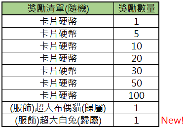
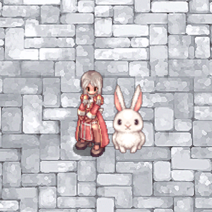
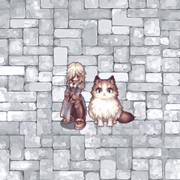

Armstrong-Fo-Langji (卡片硬幣兌換機-佛狼機)
Die Card Coin Exchange Machine — wandle unbenötigte Monster Cards in Card Coins um und setze sie für Lotterie-Rewards wie exklusive Kostüme ein.
📍 NPC & Standort
Armstrong-Fo-Langji (阿姆斯特朗-佛狼機)
Position: prt_mk 36 293
Navigate: /navi prt_mk 36/293
Hinweis: Die Öffnungszeiten richten sich nach den aktuellen offiziellen Ankündigungen — nicht durchgehend verfügbar.

Ein Slot-Maschinen-NPC namens 'Armstrong Slot Machine' steht in der Spielwelt.
- Armstrong Slot Machine
Der chinesische Text '阿姆斯特朗-佛狼機' übersetzt sich als 'Armstrong Slot Machine', ein bekannter interaktiver Slot-NPC in Ragnarok Online.

Dies ist die Minikarte für den Bereich des Prontera-Platzes.
Die Karte zeigt den zentralen Brunnen und die vier Gartenabschnitte von Prontera.
🔄 Exchange-Tabelle
Card → Card Coin
- 1 × beliebige Card → 1 × Card Coin
- 3 × identische Card → 3 × Card Coins (Neu)
- 5 × identische Card → 5 × Card Coins (Neu)
- 4 verschiedene Card-Arten à 5 Stück → 20 × Card Coins
Beispiel: 5 × Poring Card + 5 × Fabre Card + 5 × Yoyo Card + 5 × Swordfish Card → 20 Card Coins
Card Coin → Lotterie
20 × Card Coin = 1 × Lotterie-Zug
Mögliche Rewards enthalten seltene Kostüme, z. B.:

Eine Tabelle, die die möglichen zufälligen Belohnungen und deren Mengen für eine In-Game-Aktion auflistet.
| Belohnungsliste (Zufällig) | Belohnungsmenge |
|---|---|
| Card Coin | 1 |
| Card Coin | 5 |
| Card Coin | 10 |
| Card Coin | 20 |
| Card Coin | 30 |
| Card Coin | 50 |
| Card Coin | 100 |
| (Costume) Giant Cat Plush (Account Bound) | 1 |
| (Costume) Giant White Rabbit (Account Bound) | 1 |
Der Eintrag '(Costume) Giant White Rabbit (Account Bound)' ist als neu markiert.
🎁 Kostüm-Rewards (Beispiele)

Ein Charakter im Ragnarok-Stil steht neben einem weißen Kaninchen-Begleiter.

Ein Screenshot eines Spielers mit einer Katze als Begleiter auf einem Steinpflaster.
💡 Praxis-Tipps
- Duplikate nutzen: Die 3er- und 5er-Varianten sind effizienter als 1-Card-Tauschs — Cards sammeln und gebündelt tauschen
- 4-Verschiedene-Combo: Mit 20 Cards gleich 20 Coins, also direkt 1 Lotterie-Run — der beste Deal
- Event-Timing: Da die Maschine nur periodisch verfügbar ist, Cards vorab horten
⚠️ Hinweise
- Tausch- und Reward-Listen können mit Patches angepasst werden.
- Öffnungszeiten der Fo-Langji-Maschine richten sich nach der offiziellen Ankündigung.